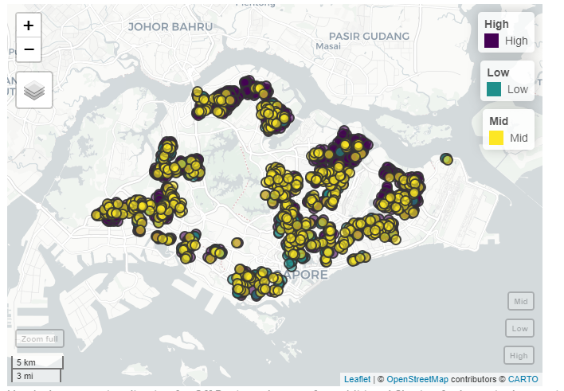

Overview
1. Theme: Spatial Points Analysis on URA Parking in Singapore
2. Abstract
3. Problem and Motivation
Singapore is a densely populated city-state that faces the challenge of providing adequate and efficient carpark facilities to its residents and visitors.The spatial distribution of carparks across the city is uneven, with some areas experiencing high demand while others have surplus capacity.
Geospatial analysis can help identify hot spots and cold spots of carparks, which are areas with high and low concentrations of carparks, respectively. Understanding these patterns can inform policies and decisions related to the allocation and management of carpark facilities, such as identifying areas in need of additional carparks or adjusting parking rates in areas with high demand.
Therefore, the problem statement is to investigate the spatial patterns of car parks in Singapore using geospatial analysis and identify hot spots and cold spots to inform carpark allocation and management policies.
4. Project Objectives
In this project, we will be proposing to create an analytical application that allows users to:
Better understand the capabilities and use cases of Point Pattern Analysis in the case of Car parks in Singapore
Conduct Spatial Point Patterns Analysis (Kernel density estimation and, G and L functions)
Conduct Hot Spot and Cold Spot Analysis
Use these insights derived from the analysis for better understanding on the distribution of car parks in Singapore.
5. Main Features
6. Data Sources
7. Approach and Methodology
i. Data Preparation
Assembling data from various sources
Data import
Data wrangling
ii. Exploratory Data Analysis
Analyse distribution of Spatial Points
Check for outliers
iii. Point Pattern Analysis
Kernel Density Estimation: Visualise the density of the spatial points and identify patterns in the distribution.
L-function & G-function: Determine whether the points patterns is clustered or randomly distributed
8. Literature Review
1) A Shiny Web Application for teaching model-based geostatistics to population health scientists


Summary:
MBGapp is a Shiny Web Application that can be used to teach the different stages of a geostatistical analysis. In this case study, they make use of the Loa loa (eyeworm) data from Cameroon to analyse its rate of infection. Through this model-based geostatistics (MBG) study, they are able to study the public health problems by using spatially discrete survey data to investigate spatial variation in disease risk.
Learning Points:
MBGapp has a sidebar which has a ‘upload data’ functionality which allows users to upload their file in CSV format. Users are also prompted about the projection format so that the coordinates displayed can be accurate.
There are various tabs to view the distribution such as ‘Explore’, ‘Variogram’, ‘Estimation’, ‘Prediction’ and ‘Report’ to use for all-rounded analysis.
Linking back to our project:
We will ensure that users are able to upload their data properly for analysis
We could have different tabs for different functions to serve various purposes.
2. Spatial Point Analysis of Carpark Vacancies in Singapore

Summary
The writer conducted geospatial analysis on the availability of parking spaces in carparks in Singapore, and then built a tool to allow drivers to have a better visualisation and sense of parking space availability of their intended carpark.
Learning Points
- The study split the availability into 3 categories (Low, Mid, High). The study analysed the availability of different carparks within a day and segregated it between business hours and non-business hours
- They did a visualisation of the carpark availability across Singapore across both business and non-business hours.
Linking back to our project
We can include a similar analysis into our application solution. For our solution, we allow users to visualise the full capacities of carparks across Singapore. We can also visualise other amenities around the carparks to help them have a better sense of the area.
3. Measuring Spatial Distribution of Coffee Shops in Surakarta
(kathy)